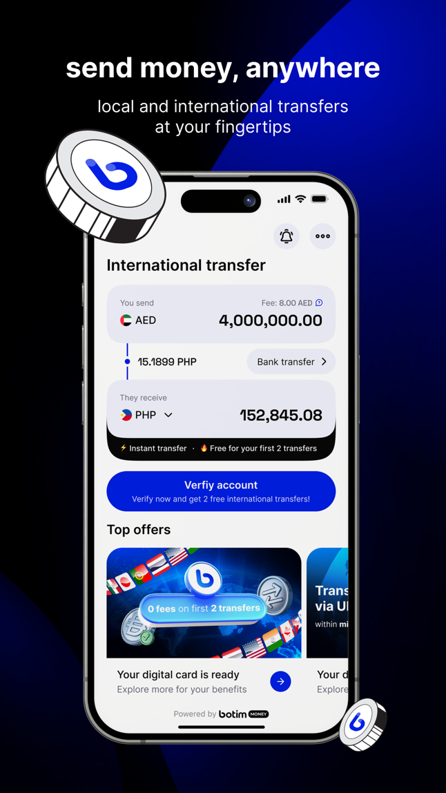

BOTIM 的三道设计题：为什么一个通讯应用要自己做汇款
BOTIM 在加密通讯、跨境汇款、订阅管理上的三个独特选择——动态费率查询、应用商店代管支付、角色化故障排查，背后各有什么样的工程取舍和产品判断。
你有没有想过，为什么一个主打语音视频通话的应用，要把国际汇款这件事也揽进来做？从 botim官网 的功能排布就能看出来，它的答案是：它的目标用户群体——中东和南亚的跨境劳工、留学生、家庭——每天都在同时面对两个痛点：跟家人的通话，和往家里寄钱。把这两件事塞进同一个 App，表面上是产品扩张，底层却是三道完全不同的设计难题。这篇文章想聊的不是它有什么功能，而是它为什么选了现在这套设计。
第一道题：汇率为什么不能写死
多数跨境汇款渠道的费用页面是静态的——"手续费 1%，汇率见表格"，然后在表格底下用小字注明"实际汇率以交易时为准"。BOTIM 没有这么做。它把费用查询做成了一件需要你先告诉它"我要去哪、寄多少"才肯告诉你价格的事。这不是界面设计的风格差异，而是它的汇款通道架构决定的必然选择。
简单说，BOTIM 自己不是清算行。它扮演的是一个"通道聚合器"的角色：背后接了多家当地的清算服务商，不同目的国走的通道不一样，同一目的国不同金额档位也可能切不同通道。每条通道的成本结构是实时波动的——当地监管机构会不会临时调整收费、某条通道今天量太大要不要切换备用线路、甚至外汇市场微小的点差变动都会传导到最终用户端。把这些变量预先算好再展示，意味着它不能维护一张静态费率表，只能让后端在你输入金额和目的国的那一刻，去实时调用各家通道的报价接口，然后挑出当前最优方案再算给你看。
这个设计的代价很直接：你在不同时间查同一个路由，得到的到手金额可能不一样。对习惯了"价格固定"的用户来说，这种"每次都要重新查一次"的体验有个适应过程。但它换来了两样东西：一是 BOTIM 不用承担汇率波动的风险，风险直接落在用户下单那一秒锁定；二是它能真的做到比传统渠道便宜——因为它永远在挑当前最便宜的通道，而不是维持一个平均价让所有人都补了差价。

所以它的费率承诺"比传统渠道便宜约 30%"不是一句空话，但也不是对每一笔都成立。省钱的关键，恰恰在于你能不能接受"每次汇款前都查一次"这件事。月初额度刚重置时查、攒够一笔大额再查，这两个用户习惯之所以在 BOTIM 的文档里被反复强调，本质上是在帮用户利用这套动态定价机制给自己省钱。
第二道题：VIP 取消为什么不在 App 里
第二个容易让人困惑的设计是：取消订阅这件事，BOTIM 自己完全不接管。无论是 iPhone 还是 Android 用户，取消路径都指向应用商店的订阅管理页面。这个选择背后有两个完全不同层面的逻辑，一个是商业层面的，一个是技术层面的。
商业层面很直接：应用商店抽成 30% 这件事大家都知道，但很多人没注意到的是，这个抽成不只是首次订阅，每次自动续费都要抽。同时，应用商店提供的是完整的订阅生命周期管理——扣费、续费、退款争议处理、跨设备权益同步——一整套托管服务。BOTIM 如果要自己做，就意味着自己处理支付渠道、自己管理订阅状态、自己跟每个用户的支付服务商对账。对于一个面向十几个国家的应用来说，这套账的复杂度会爆掉。
技术层面的考量更隐蔽。你注意到它的 VIP 权益有一个很特别的边界了吗？订阅绑在商店账号上，不是绑在 BOTIM 账号上。这意味着：换了商店账号，同一台手机上你买的 VIP 就没了；换回原来的商店账号，权益立刻恢复。这个设计看起来反直觉，但它解决了一个老问题：权益校验不需要 BOTIM 自己维护状态。每次应用启动时，它向应用商店查询"这个商店账号下有哪些有效订阅"，拿到结果后在本地渲染对应的功能开关即可。没有自己的订阅数据库，就没有同步延迟、没有状态错乱、没有"你明明付了钱但系统没记录"的故障场景。
代价是什么？取消路径对新用户来说不直观。很多人在 App 设置里翻半天找不到取消入口，最后去应用商店才解决。文档里之所以要专门用一整页来讲取消步骤，并且反复强调"取消入口在应用商店"，正是为了弥补这个设计选择带来的用户认知缺口。这是一个典型的"技术架构正确但用户体验需要额外引导"的场景。如果看完这些你想实际体验一下它的汇款和通讯功能，安装包从 官方下载 拿就行。
第三道题：故障排查为什么要先分角色
第三个设计选择藏在故障排查的结构里。如果你翻过 botim文档 里的故障排查页面，会发现所有声音画面类问题都先问一个问题：问题在哪一侧？"我听不到对方"和"对方听不到我"被严格区分成两个分支，分别给出排查步骤。这个角色化排查路径不是写给程序员看的调试手册，而是写给普通用户的操作指南。
为什么要这么设计？因为跨境通话里，双方往往不在同一个网络环境里，一方在中东的 4G 网络、另一方在南亚的家里 Wi-Fi，两边的设备型号、系统版本、权限设置可能完全不同。如果把排查步骤混在一起让用户一条条试，很容易出现"我试了所有方法还是不行"的情况，因为真正有问题的那一步根本不在这个用户的设备上。角色化排查把问题空间一分为二，让每个人只需要管自己那一侧，立刻把排查复杂度砍半。
这个设计的底层假设很有意思：多数用户分不清"对方的问题"和"我的问题"。当通话出问题时，第一反应往往是应用坏了，然后卸载重装、换网络，做了一堆无用功。BOTIM 的做法是在排查路径的最入口就强制用户先回答"到底谁听不到谁"这个简单问题，用最低的思考成本引导用户进入正确的分支。
这个思路其实可以类比到工程领域的"分段排查"方法论——不允许你一开始就怀疑整个系统，必须先定位故障段，再在段内排查。区别是，BOTIM 把这个专业思维翻译成了普通用户能跟着走的步骤，而且只翻译到够用的程度。
适合谁，不适合谁
把这三道设计题放在一起看，BOTIM 的产品定位就很清晰了。它的核心用户是同时有通讯需求和汇款需求的跨境用户——这个群体的画像非常具体：在中东务工的南亚劳工、拿着学生签证的年轻人、分居两地的家庭。对这个群体来说，一个 App 解决两件高频刚需，省去了"装 A 用来打电话、装 B 用来汇款、再装 C 用来查汇率"的碎片化成本。
但它也有明确的边界。如果你只是想找一个加密通讯工具，BOTIM 不是最合适的选择——它的加密架构跟 Signal 这类纯通讯应用不在一个量级上。如果你需要大额国际汇款、对汇率精度有专业要求，它也不是最优解——动态定价意味着你无法锁定一个确定的换汇成本。它做的，是在通讯和汇款之间找到一个日常够用的平衡点，然后用这三个设计选择把这个平衡点做扎实。
这三个选择里，每一个都有得有失：动态费率换来了价格优势但牺牲了确定性，商店订阅换来了简单但牺牲了直觉性，角色化排查换来了效率但牺牲了覆盖度。产品设计从来不是"做到完美"，而是"在自己用户最在意的地方做到极致"——BOTIM 就是这么做的。关于它的更多细节，文档维护团队同时在 GitHub、Gitee 和 GitCode 三个仓库同步更新，国内用户按需自取。